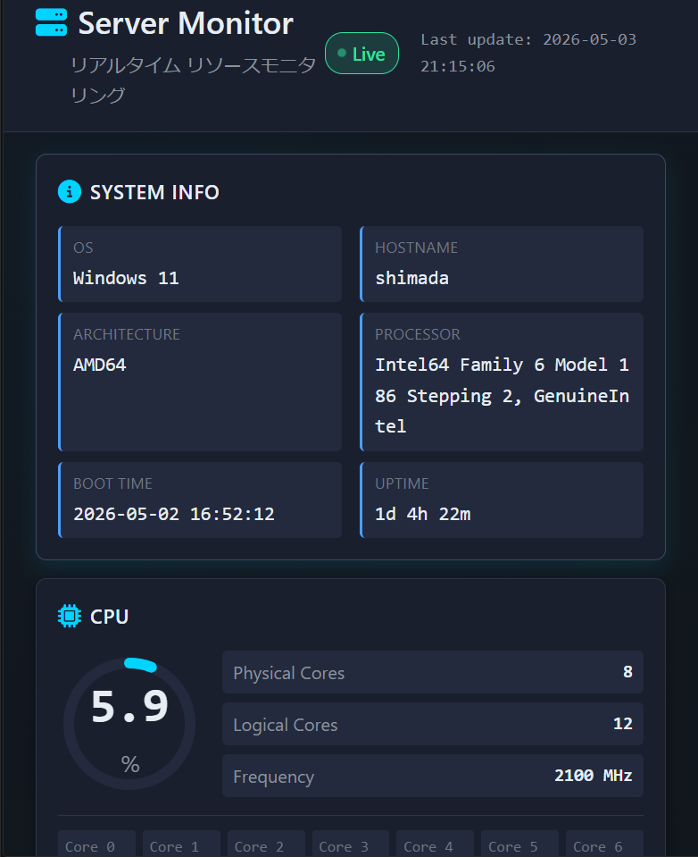

Welcome to my portfolio
IT Support Infra Support
現場経験と学習したITスキルを活かし、
PC・サーバー運用、問い合わせ対応、業務改善に役立つ作品をまとめています
Scroll
Welcome to my portfolio
現場経験と学習したITスキルを活かし、
PC・サーバー運用、問い合わせ対応、業務改善に役立つ作品をまとめています
PCキッティング、アカウント・権限、メール、Teams、OneDrive、共有フォルダなど、社内ITの基本環境を前提に整理しています。
問い合わせ内容、影響範囲、再現条件、確認コマンド、対応履歴を残し、同じ問題を次回すばやく追える形にします。
監視ダッシュボード、業務改善ツール、7本の実務想定ドキュメント、8本のPowerShell確認スクリプトで、運用支援に近い成果物を公開しています。
状況確認、再現条件の整理、影響範囲の確認を行い、次に見るべき原因を絞り込みます。
Windows操作、Office利用、機器接続、初期設定など、利用者目線の基本サポートに対応します。
リソース状況やエラー内容を確認し、対応履歴を残して再発時に追える形へ整理します。
こんにちは、島田則幸です。2026年1月に公共職業訓練「情報処理（Pythonエンジニア）コース」を修了し、現在はITサポート・社内SE補助・インフラ運用を軸に転職活動中です。製造・物流現場で培った改善視点と、HTML/CSS・Python・PHPで制作した6作品、手順書・PowerShellスクリプトをまとめたSupport Toolkitを公開しています。
詳しく見る
PCキッティング、権限、ライセンス、共有フォルダを想定
端末情報、ログ、容量、セキュリティ状態を読み取り中心で確認
IP、DNS、ゲートウェイ、到達性を順に切り分け
ログ確認、プロセス確認、リソース監視の基礎